The lecture deals with continuous random variables. Several continuous random variables, which are commonly used in practice, are considered.
Random variables which values belong to some interval (uncountable set).
Probability distribution function (cumulative distribution function, c.d.f) \(F(x)\) of a random variable \(X\) is defined as
\[ F(x) = \text{P}\left(X\leq x\right), \text{ }x \in \mathcal{X}, \] where \(\mathcal{X}\) is an interval containing all possible values of \(X\).
\[ \text{P}\left(a \leq X \leq b\right) = F(b)-F(a) \]
\[ \text{P}\left(-\infty \leq X \leq +\infty\right) = F(+\infty)-F(-\infty) = 1-0 = 1 \]
Probability density function (p.d.f), \(f(x)\) of a random variable \(X\) is a function which, at any two given sample points from the sample space, provides a relative likelihood that explains how likely it is that a value of the random variable would equal one sample point compared to another.
In a more precise sense, the p.d.f. is used to specify the probability of the random variable falling within a particular range of values
\[ \text{P}\left(a \leq X \leq b\right) = \int\limits_a^b{f(x)dx}. \]
Also, since \(\text{P}\left(a \leq X \leq b\right) = F(b)-F(a)\), there exists a connection between c.d.f. \(F(x)\) and p.d.f. \(f(x)\):
\[ f(x) = \frac{d}{dx}F(x)\Leftrightarrow F(x) = \int\limits_{-\infty}^xf(t)dt. \]
The expected value \(\mu\) of a continuous random variable with a p.d.f. \(f(x)\) is defined as:
\[ \mu=\text{E}\left[X\right] = \int\limits_{-\infty}^{+\infty}{xf(x)dx}. \]
The expected value of a random variable \(Y = g(X)\), where \(g(x)\) is some (continuous) function, is defined as:
\[ \text{E}\left[g(X)\right] = \int\limits_{-\infty}^{+\infty}{g(x)f(x)dx}. \]
For any two random variables \(X, Y\), and for any two real numbers \(a, b\),
\[ \text{E}\left[aX\pm bY\right] = a\text{E}\left[X\right] \pm b\text{E}\left[Y\right]. \]
Variance (\(\sigma^2\)) is the expectation of the squared deviation of a random variable from its expected value:
\[ \sigma^2 = \text{V}\left[X\right] = \text{E}\left[\left(X-\text{E}\left[X\right]\right)^2\right] = \int\limits_{-\infty}^{+\infty}{(x-\mu)^2f(x)dx} = \int\limits_{-\infty}^{+\infty}{x^2f(x)dx} - \mu^2 = \text{E}\left[X^2\right]-\left(\text{E}\left[X\right]\right)^2. \] For any two random variables \(X, Y\), and for any two real numbers \(a, b\),
\[ \text{V}\left[aX\pm bY\right] = a^2\text{V}\left[X\right] + b^2\text{V}\left[Y\right]. \]
\[ \sigma = D\left[X\right] = \sqrt{V\left[X\right]} \]
(the same as in a discrete case)
\[ CV = \frac{\sigma}{\mu}. \]
(the same as in a discrete case)
\[ \gamma_1 = \text{E}\left[\left(\frac{X-\mu}{\sigma}\right)^3\right] = \frac{\text{E}\left[\left(X-\mu\right)^3\right]}{\sigma^3} = \frac{\mu_3}{\sigma^3}, \]
where a third central moment \(\mu_3\) is calculated as
\[ \mu_3 = \text{E}\left[\left(X-\mu\right)^3\right] = \int\limits_{-\infty}^{+\infty}{(x-\mu)^3f(x)dx} \]
\[ \text{Kurt}\left[X\right] = \text{E}\left[\left(\frac{X-\mu}{\sigma}\right)^4\right] = \frac{\text{E}\left[\left(X-\mu\right)^4\right]}{\sigma^4} = \frac{\mu_4}{\sigma^4}, \]
where a fourth central moment \(\mu_4\) is calculated as
\[ \mu_4 = \text{E}\left[\left(X-\mu\right)^4\right] = \int\limits_{-\infty}^{+\infty}{(x-\mu)^4f(x)dx} \]
The quantile function \(Q(p)\) associated with a c.d.f. \(F(x)\) of a random variable \(X\), specifies the value of the random variable such that the probability of the variable being less than or equal to that value equals the given probability. It is also called the percent-point function or inverse cumulative distribution function.
Thus, for a given probability \(p\),
\[ p = \text{P}\left(X\leq q\right) = F(q) \Rightarrow q = F^{-1}(p) = Q(p) \]
There are few distributions where a closed-form expression of a quantile function can be found. In most of the cases, the evaluation of quantile functions requires numerical methods.
When the c.d.f. itself has a closed-form expression, one can always use a numerical root-finding algorithm such as the bisection method to invert the c.d.f. Algorithms for common distributions are built into many statistical software packages.
Quantile functions may also be characterized as solutions of non-linear ordinary (ODE) and partial differential (PDE) equations. For some particular cases, ODEs have been given and solved (Steinbecher G. and Shaw W.T., “Quantile mechanics”, Euro Journal of Applied Mathematics, vol. 19, pp. 87-112. Cambridge University Press. doi:10.1017/S0956792508007341)
Chebyshev’s inequality guarantees that, for a wide class of probability distributions, no more than a certain fraction of values can be more than a certain distance from the mean. Specifically, no more than \(\frac{1}{k^2}\) of the distribution’s values can be more than \(k\) standard deviations away from the mean (or equivalently, at least \(1-\frac{1}{k^2}\) of the distribution’s values are within \(k\) standard deviations of the mean).
The inequality has great utility because it can be applied to any probability distribution, for which the mean and variance are defined.
Let \(X\) be a random variable with finite expected value \(\mu\) and finite non-zero variance \(\sigma^2\). Then, for any real number \(k > 0\),
\[ \text{P}\left(|X-\mu|\geq k\sigma \right)\leq \frac{1}{k^2}. \]
| \(k\) | min % of \(X\) within [\(\mu\)-k\(\sigma\), \(\mu\)+k\(\sigma\)] | max % of \(X\) beyond [\(\mu\)-k\(\sigma\), \(\mu\)+k\(\sigma\)] |
|---|---|---|
| 1 | 0.00 | 100.00 |
| 2 | 75.00 | 25.00 |
| 3 | 88.89 | 11.11 |
| 4 | 93.75 | 6.25 |
| 5 | 96.00 | 4.00 |
Only the case \(k>1\) is useful. When \(k\leq 1\) the right-hand side \(\frac{1}{k^2}\geq 1\) and the inequality is trivial as all probabilities are \(\leq 1\).
The law of large numbers (LLN) is a theorem that describes the result of performing the same experiment a large number of times. According to the law, the average of the results obtained from a large number of trials should be close to the expected value, and will tend to become closer as more trials are performed.
Let \(X_1, X_2, \ldots, X_n\) be i.i.d. random variables with \(\text{E}\left[X_i\right] = \mu\) (for any \(i\)). Then
\[ \overline{X} = \frac{1}{n}\left(X_1 + X_2 + \ldots + X_n\right) \rightarrow \mu\text{ as }n\rightarrow +\infty. \]
\[ [a = x_0, x_1], [x_1, x_2], \ldots, [x_{n-1}, x_n = b], \text{ where for any }i = 1, 2, \ldots, n: x_{i}-x_{i-1} = \frac{b-a}{n}, \] then
\[ \text{P}\left(x_{i-1} \leq X \leq x_i\right) = \frac{1}{n}. \] Such a random variable follows uniform distribution: \(X\sim Uniform(a, b)\) with
\[ f(x) = \left\{\begin{array}{rl} \frac{1}{b-a}, & x\in [a, b] \\ 0, & \text{otherwise}\end{array}\right. \] - c.d.f.
\[ F(x) = \left\{\begin{array}{rl} 0, & x < a \\ \frac{x-a}{b-a}, & x\in [a, b] \\ 1, & x > b\end{array}\right. \]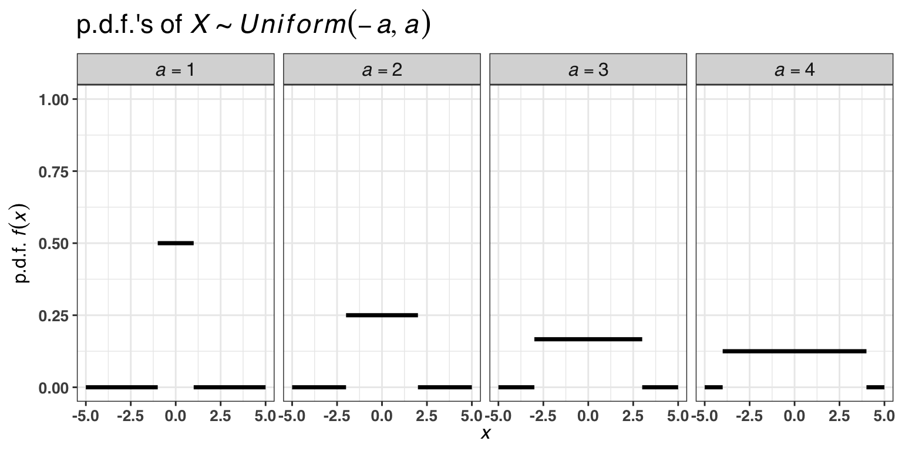
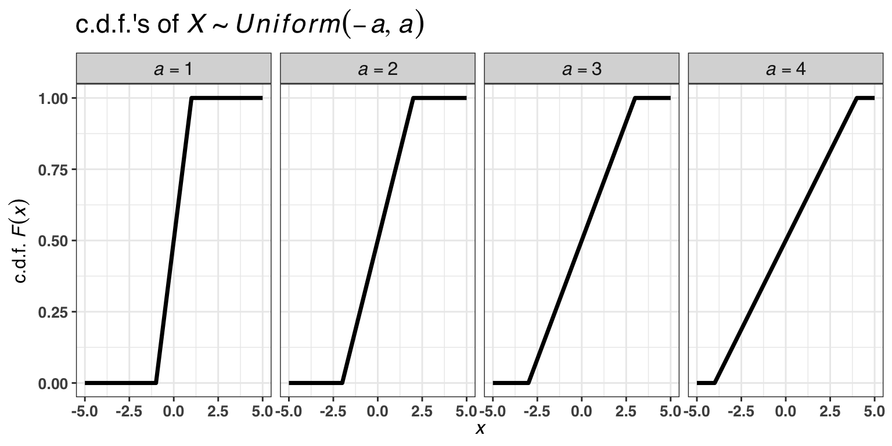
Such a random variable follows normal distribution: \(X\sim N(\mu, \sigma^2)\) with
\[ f(x) = \frac{1}{\sigma\sqrt{2\pi}}e^{-\frac{(x-\mu)^2}{2\sigma^2}}. \]
\[ F(x) = \frac{1}{\sigma\sqrt{2\pi}}\int\limits_{-\infty}^x{e^{-\frac{(t-\mu)^2}{2\sigma^2}}dt}. \]
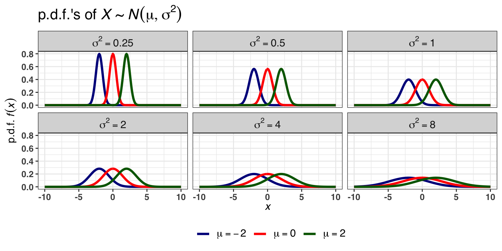
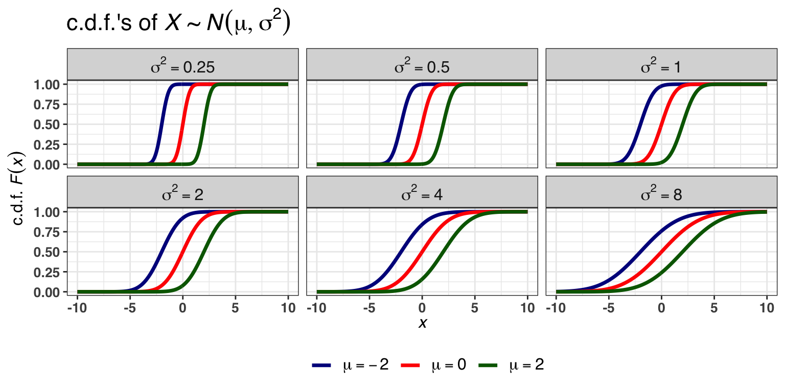
A special case of \(N(\mu, \sigma^2)\) is a standard normal distribution \(N(0, 1)\).
\[ \varphi(x) = \frac{1}{\sqrt{2\pi}}e^{-\frac{x^2}{2}}, \qquad\varphi(-x) = \text{ }\varphi(x). \]
\[ \Phi(x) = \frac{1}{\sqrt{2\pi}}\int\limits_{-\infty}^xe^{-\frac{t^2}{2}}dt, \qquad \Phi(-x) = 1-\Phi(x). \]
If \(Z\sim N(0, 1)\) then
\[ X = \mu + \sigma Z \sim N(\mu, \sigma^2). \]
\[ f(x) = \frac{1}{\sigma}\varphi\left(\frac{x-\mu}{\sigma}\right) \]
\[ F(x) = \Phi\left(\frac{x-\mu}{\sigma}\right) \] ### 3\(\sigma\)-rule
\[ \begin{aligned} \text{P}\left(|X-\mu| \leq 3\sigma \right) &= \text{P}\left(\mu-3\sigma\leq X\leq \mu+3\sigma \right) = \\ &= F(\mu+3\sigma) - F(\mu-3\sigma) = \\ &= \Phi\left(\frac{\mu+3\sigma-\mu}{\sigma}\right)-\Phi\left(\frac{\mu-3\sigma-\mu}{\sigma}\right) = \\ &= \Phi\left(3\right)-\Phi\left(-3\right) = \\ &= \Phi\left(3\right)-(1 - \Phi\left(3\right)) = \\ &= 2\Phi\left(3\right)-1 \approx 0.9973 \end{aligned} \]
99,7% of all possible observations of a normal random variable belong to the interval \([\mu-3\sigma, \mu+3\sigma]\).
Q: what are the values of the following probabilities \(\text{P}\left(|X-\mu| \leq \sigma \right)\), \(\text{P}\left(|X-\mu| \leq 2\sigma \right)\)?
Let \(X_1, X_2, \ldots, X_n\) be i.i.d. from some distribution:
Let \(S_n = \frac{X_1 + X_2 + \ldots + X_n}{n}\).
Then,
\[ \text{Distribution of }\sqrt{n}\left(S_n - \mu\right)\rightarrow N(0, \sigma^2) \text{ as }n \rightarrow +\infty. \] Let us demonstrate how CLT works by doing some simulations.
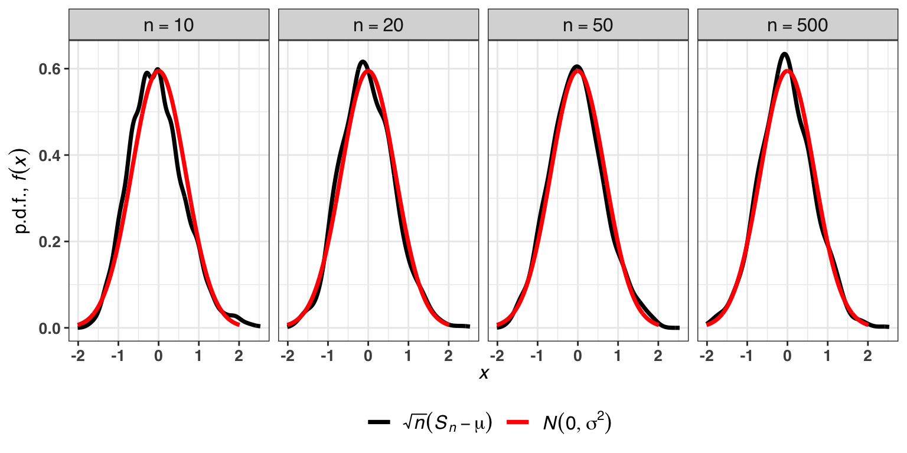
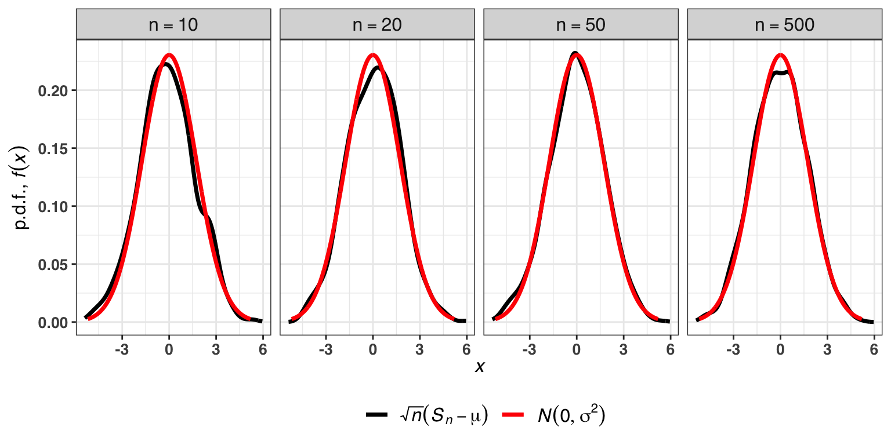
Such a random variable follows log-normal distribution: \(X\sim LN(\mu, \sigma^2)\) with
\[ f(x) = \frac{1}{x\sigma\sqrt{2\pi}}e^{-\frac{(\log(x)-\mu)^2}{2\sigma^2}}. \]
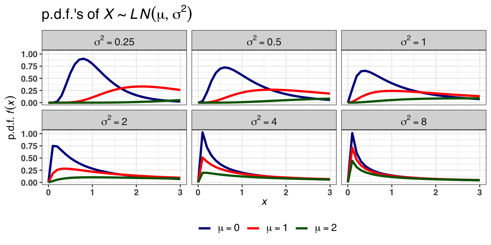
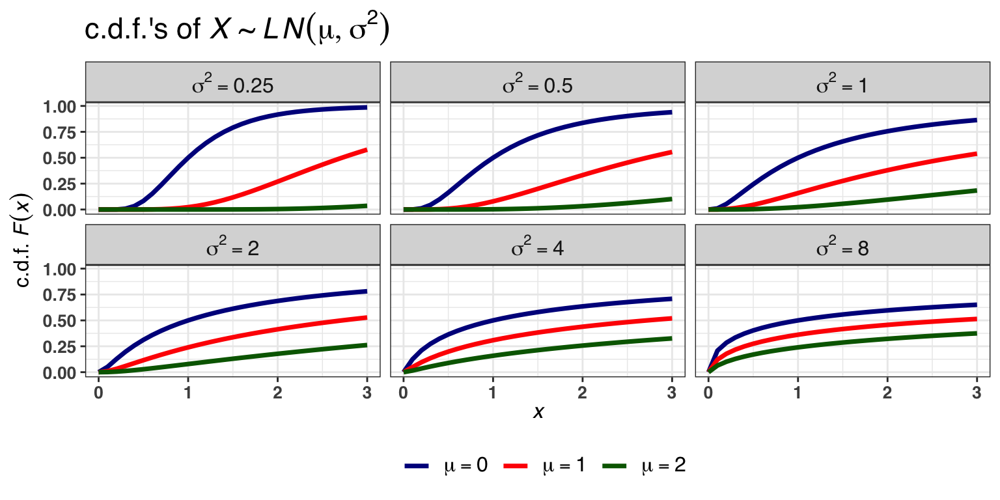
Such a random variable follows truncated-normal distribution: \(X\sim TN(\mu, \sigma^2, a)\) with
\[ f(x) = \frac{1}{\sigma}\left(1-\Phi\left(\frac{a-\mu}{\sigma}\right)\right)^{-1}\varphi\left(\frac{x-\mu}{\sigma}\right). \]
\[ F(x) = \frac{\Phi\left(\frac{x-\mu}{\sigma}\right)-\Phi\left(\frac{a-\mu}{\sigma}\right)}{1-\Phi\left(\frac{a-\mu}{\sigma}\right)}. \]
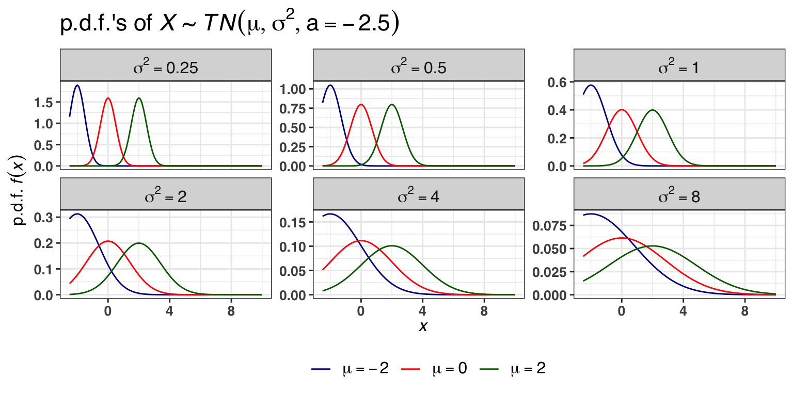
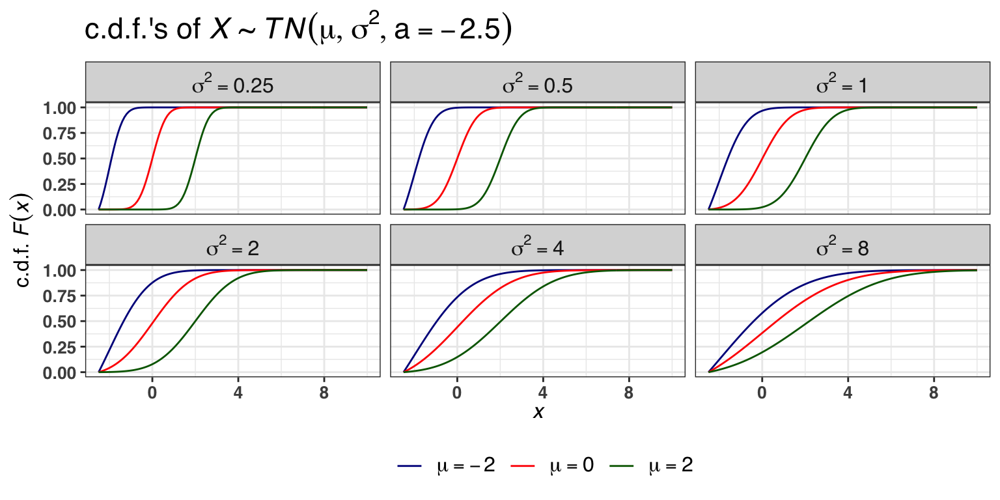
Such a random variable follows exponential distribution: \(X\sim Exp(\lambda)\) with
\[ f(x) = \lambda e^{-\lambda x}, \quad x \geq 0. \] - c.d.f.
\[ F(x) = 1- e^{-\lambda x}, \quad x \geq 0. \]
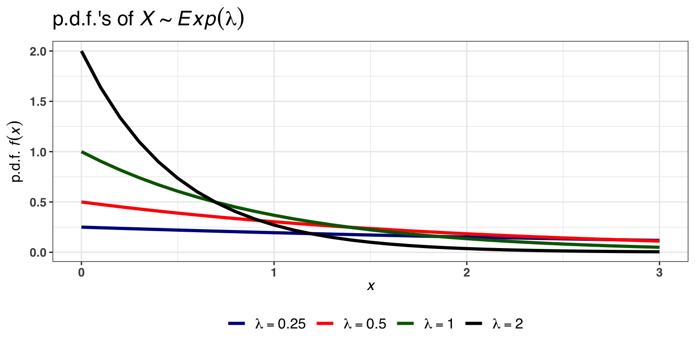
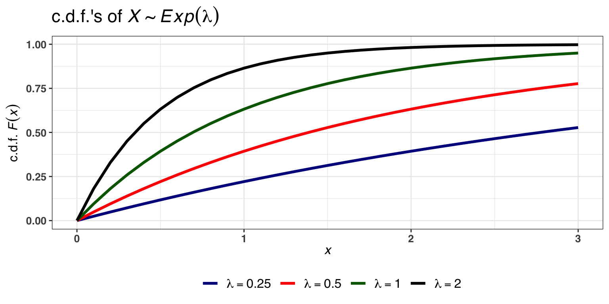
It is worth to note that exponential and log-normal distributions are used in survival analysis to model time-to-event random variables. Other distributions used are Weibull, Log-logistics, Gamma. We will consider them in the topic on survival analysis.
Solution:
\[ \text{P}\left(X \leq x_1\right) = 0.05 \Leftrightarrow F(x_1) = 0.05 \Rightarrow x_1 = F^{-1}(0.05) = \text{qnorm(0.05, 180, 18)} \approx 150.4 \]
\[ \begin{aligned} \text{P}\left(X \geq x_2\right) &= 0.05 \Leftrightarrow 1 - F(x_2) = 0.05 \Leftrightarrow F(x_2) = 0.95 \Rightarrow x_1 = F^{-1}(0.95) = \\ &= \text{qnorm(0.95, 180, 18)} \approx 209.6 \end{aligned} \]
Solution:
\[ \text{P}\left(T_{max} > 1\right) = 1-\text{P}\left(T_{max} \leq 1\right) = 1-F(1) = 1-(1-e^{-\lambda}) = e^{-2} \approx 0.1353353 \] 3. A normal resting heart rate for adults ranges from 60 to 100 beats per minute.
Solution:
Let \(HR\) be a random variable that follows uniform distribution, i.e. \(HR\sim Uniform(60, 100)\). Then, we have that \(a = 60\), \(b = 100\).
\[ \begin{aligned} \text{E}\left[HR\right] &= \frac{a+b}{2} = \frac{60+100}{2} = 80 = \mu \\ \text{V}\left[HR\right] &= \frac{(b-a)^2}{12} = \frac{(100-60)^2}{12} = \frac{1600}{12} \approx 133.33 = \sigma^2 \\ \text{D}\left[HR\right] &= \sqrt{\text{V}\left[HR\right]} = \sqrt{\frac{1600}{12}} \approx 11.55 \end{aligned} \]
The range that contains the heart rates around the average of 75% of the population is defined as
\[ \begin{aligned} \text{P}\left(|HR-\mu| \leq x\right) = 0.75 &\Leftrightarrow \text{P}\left(\mu-x \leq HR \leq \mu + x\right) = 0.75 \Leftrightarrow \\ &\Leftrightarrow \text{P}\left(80-x \leq HR \leq 80 + x\right) = 0.75 \Leftrightarrow \\ &\Leftrightarrow F(80+x) - F(80-x) = \frac{80+x-60}{100-60} -\frac{80-x-60}{100-60} = 0.75 \Leftrightarrow \\ &\Leftrightarrow \frac{2x}{40} = \frac{3}{4} \Leftrightarrow x = 15. \end{aligned} \]
The range is
\[ 65 \leq HR \leq 95. \]